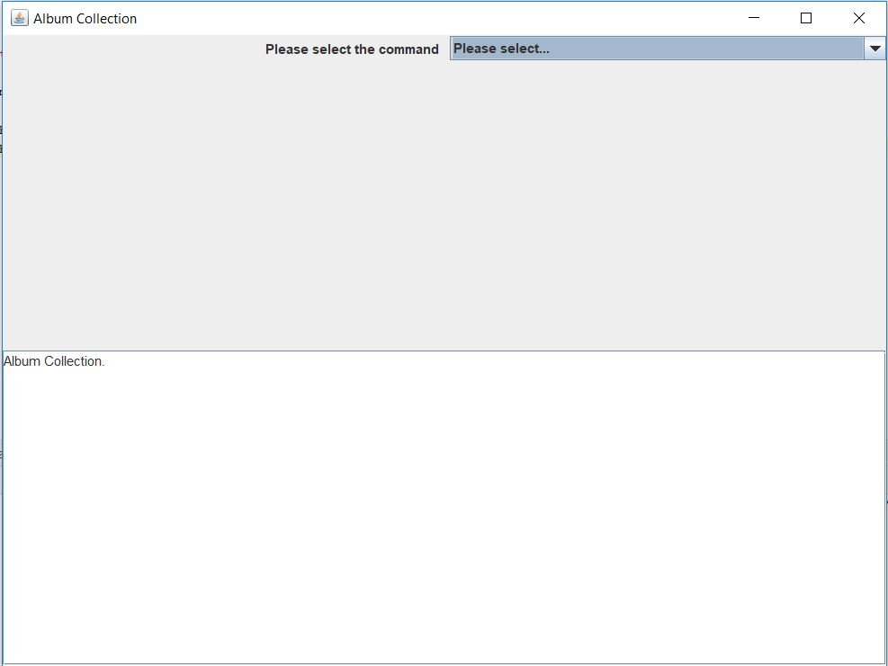
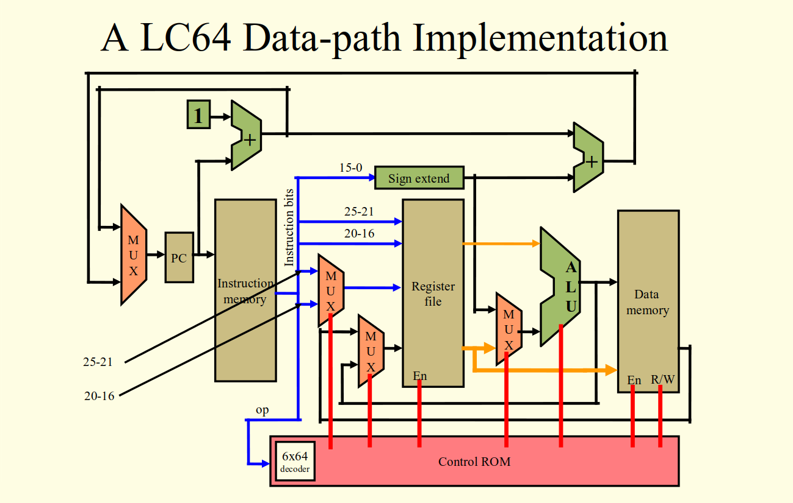

Languages: HTML, CSS, PHP, SQL
Grade: 95
Riding Lesson Website
This was the most recent project that I have worked on. It was for my Systems Analysis and Software Design class. The class was built around understanding how the industry worked, so teammates of mine set the requirements and documentation for me to follow, and I implemented the website based on their documentation.
Languages: C++
Grade: 100
Balanced Binary Search Tree(AVL and Treap Implementation)

This project was done through my Data Structures class. It was a research project to implement and test the timing efficiencies in different functions between the AVL and Treap trees.
Languages: Java
Grade: 90
Music Player Database Application

This is an older project of mine, I was starting to learn the concepts of object oriented design and programming in Java. The project is an album handler that displays a Graphic User Interface to the user and allows them to manipulate their list of albums.
Languages: Verilog and Assembly
Grade: 100
Single-Cycle Processor Implementation

In this project I created the different components needed to implement the above processor in Verilog. After setting up the processor I implemented the load word 'lw' instruction using the processor and some Assembly code.